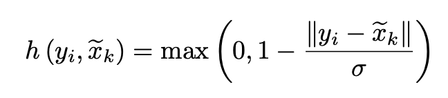

『Xu』KPConv: Flexible and Deformable Convolution for Point Clouds
不得不感叹大佬终归是大佬，Charles R. Qi在3D视觉上真的是做出了很多优秀的工作，同为浙江人怎么差距这么大 :)
本文提出了新的卷积核「Point Convolution」
首先可以简单的回顾二维Grid Kernel
卷积核在空间中（二维平面上）的固定位置提供一个固定的weight，因此将这样的思路借鉴到Irregular Kernel上来（包括二维或者三维）就应该是如下所示的
在一个连续的空间中固定某几个点，然后这几个点也可以提供权重。这些点在文章中被称为「Kernel Point」，这也是「Point Convolution」这个名字的由来（我认为）。
考虑卷积操作
$g$表示的就是卷积核，对于一个领域$N_x$，通过每个点与centroid的位置关系，求得对应的权重，并加权得到卷积的输出。因此卷积操作的核心就是对$g$的定义方式。
在point convolution中，$g$的定义如下
其中$y_i=x_i-x$
我们可以这样理解，每一个neighbor的权重是通过所有kernel point根据其与neighbor的关系加权得到的，因此每一个neighbor都与所有kernel point有关系。我想这也是Point Convolution & Graph Convolution之间的区别，Graph Convolution通过的是Edge Convolution，每一个neighbor的权重是通过从neighbor与centroid的边信息里提取的。作者在文章中是这么介绍两者的不同之处的
Despite the similarity between point convolutions and the most recent graph convolutions [39, 43], the latter learn filters on edge relationships instead of points relative positions. In other words, a graph convolution combines features on local surface patches, while being invariant to the deformations of those patches in Euclidean space. In contrast, KPConv combines features locally according to the 3D geometry, thus capturing the deformations of the surfaces.
其中如何作为衡量每个neighbor与每个kernel point之间的关系的函数$h$，其被定义为

介绍了如何通过给定的基于point的kernel进行convolution之后，一个很重要的问题就是如果对kernel中的点进行位置的固定。例如grid kernel，每一个pixel都会有一个固定的位置。
因此作者提出了两种不同的kernel
- Rigid Kernel
- Deformable Kernel
首先是Rigid Kernel，具体的细节我也没有看，但是在作者的supplementary里面有给出，反正整体的思路好像就是假设每一个点都有一个排斥力，所有filter内的kernel point会形成一个力场，从而每个point都会互相制约，从而达到稳定的位置。
也许会有人觉得如果每个位置都是learnable的，那么整个convolution会更好，但是作者发现对效果的提升并不明显，相反作者用了一个很巧妙的方法，就是通过rigid kernel对当前的input学习一个3K的vector，用来调整K个kernel point的xyz位置（K 3），这就是所谓的*「Deformed」。通过对position的调整，那么整个kernel就肯定会更加generable。
总而言之 太强了 （跪